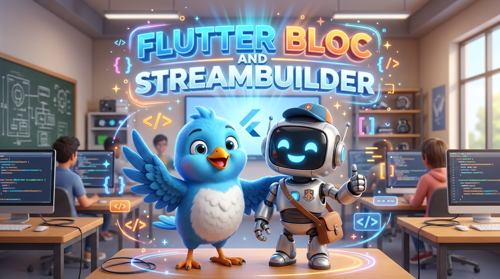
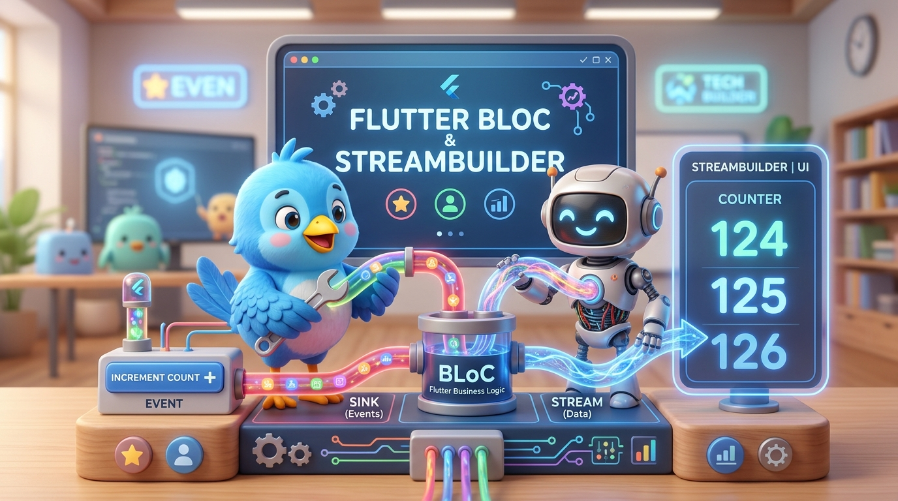
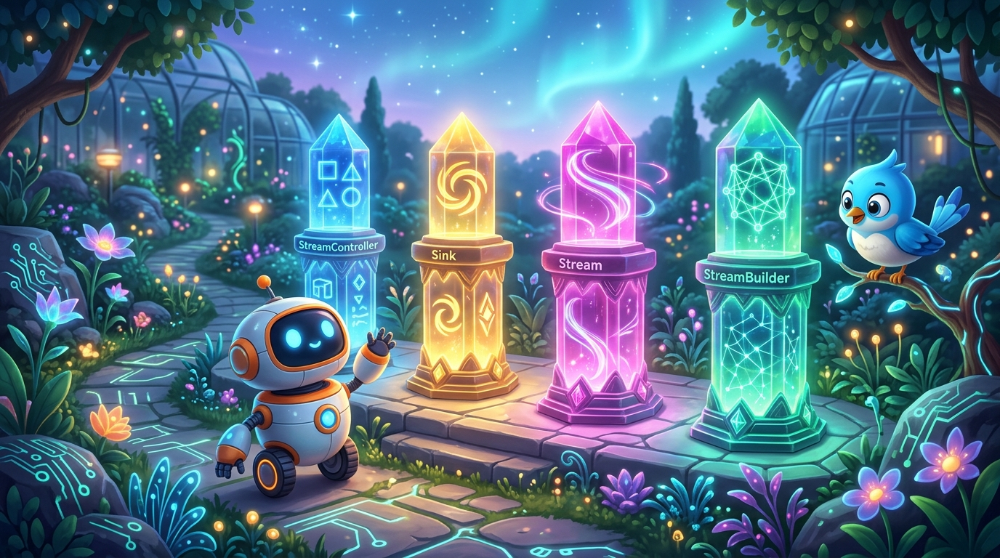
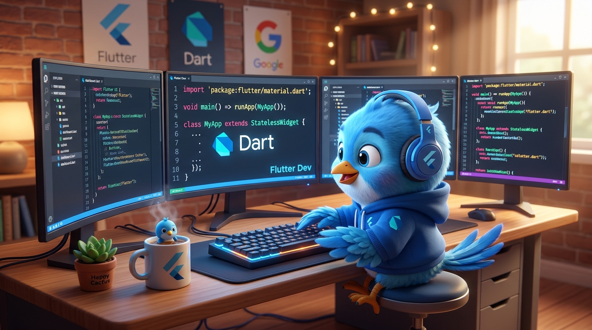
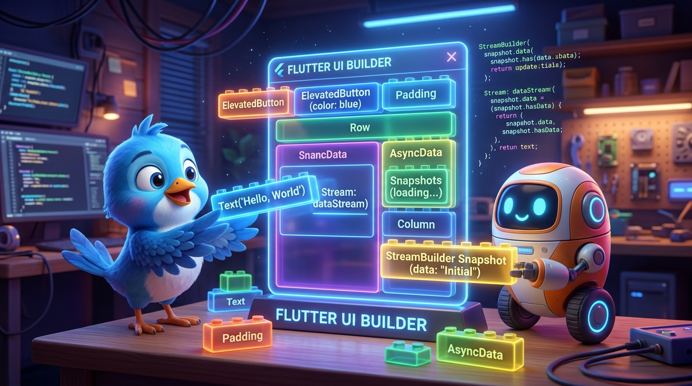
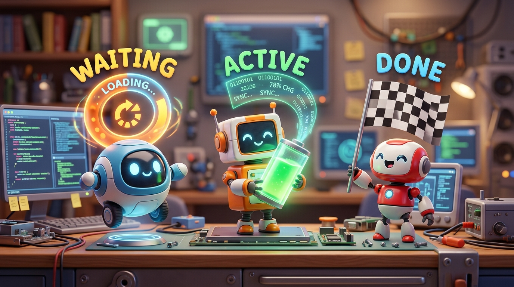
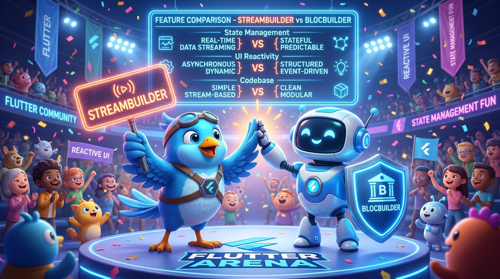

BLoC with StreamBuilder ស្វែងយល់ស៊ីជម្រៅអំពីការគ្រប់គ្រង State ដោយប្រើ Pure Dart Streams
An in-depth research presentation on architectural design, reactive streams, asynchronous data flow, and Flutter's native StreamBuilder widget.
បទបង្ហាញស្រាវជ្រាវស្តីពីស្ថាបត្យកម្មកម្មវិធី ការបញ្ជូនទិន្នន័យអសមកាលតាម Reactive Streams និងការប្រើប្រាស់ StreamBuilder របស់ Flutter។

Why "Bloc with StreamBuilder"? ហេតុអ្វីបានជាមានការប្រើប្រាស់ BLoC ជាមួយ StreamBuilder?
Understanding the origin and foundation of the BLoC pattern in Flutter ស្វែងយល់ពីប្រវត្តិដើម និងមូលដ្ឋានគ្រឹះពិតប្រាកដនៃ BLoC Pattern ក្នុង Flutter
BLoC Was Born From Pure Streams BLoC កកើតឡើងចេញពី Pure Dart Streams
Before third-party packages like flutter_bloc existed, Google engineers (Paolo Soares & Cong Hui at Google I/O 2018) created BLoC using standard Dart language features:
មុនពេលមាន package ជំនួយពីក្រៅ វិស្វករ Google បានបង្កើត BLoC ដោយពឹងផ្អែកលើលក្ខណៈពិសេសរបស់ Dart សុទ្ធសាធ៖
-
Pure Dart: No external libraries needed; relies solely on
dart:async. Dart សុទ្ធ ដោយពុំចាំបាច់ដំឡើង Package ក្រៅឡើយ។ - Sink & Stream: Inputs go through Sinks, outputs emit through Streams. ទិន្នន័យចូលតាម Sink (Input) ហើយបញ្ចេញលទ្ធផលតាម Stream (Output)។
-
Native Flutter Widget: Flutter provides
StreamBuilderto listen and rebuild UI. StreamBuilder ជា Widget ស្រាប់របស់ Flutter ក្នុងការស្តាប់ទិន្នន័យ និង Rebuild UI ដោយស្វ័យប្រវត្តិ។
BLoC with StreamBuilder Architecture ស្ថាបត្យកម្ម និងលំហូរទិន្នន័យនៃ BLoC ជាមួយ StreamBuilder
Unidirectional reactive data flow between UI, Sinks, Controllers, and StreamBuilder លំហូរទិន្នន័យវិលជុំមួយទិស (Unidirectional) រវាង UI, Sink, StreamController, និង StreamBuilder

User clicks button or triggers event
_bloc.sink.add(...)
Calculates business logic & state
Emits async state value
Receives snapshot & re-renders
The 4 Key Pillars in Dart & Flutter សសរស្តម្ភគន្លឹះទាំង ៤ ក្នុង Dart និង Flutter សម្រាប់ BLoC
The foundational classes that make BLoC with StreamBuilder work seamlessly Class មូលដ្ឋានទាំង ៤ ដែលធ្វើឱ្យ BLoC ដំណើរការជាមួយ StreamBuilder យ៉ាងរលូន
StreamController<T>
The Engine & Coordinator
Manages both Sink & Stream. ម៉ាស៊ីនគ្រប់គ្រងការបញ្ជូនទិន្នន័យ។
_ctrl = StreamController<int>.broadcast();Sink<T>
The Entry Port (Input)
Receives events via .add().
ច្រកទ្វារទទួលទិន្នន័យចូលពី UI។
Sink<Event> get eventSink => _ctrl.sink;Stream<T>
The Data Pipe (Output)
Emits async state data. បំពង់បង្ហូរទិន្នន័យអសមកាលចេញ។
Stream<int> get stream => _ctrl.stream;StreamBuilder<T>
The Reactive Consumer
Rebuilds UI on new snapshots. Widget គូរ UI តាម Stream។
StreamBuilder(stream: ..., builder: ...)
Step 1: Writing the Pure Dart BLoC ជំហានទី ១៖ ការបង្កើត BLoC ដោយប្រើប្រាស់ Dart សុទ្ធ
Zero external dependencies! Only standard dart:async is needed.
ពុំបាច់ប្រើ Package ក្រៅឡើយ! ប្រើតែបណ្ណាល័យស្តង់ដារ dart:async របស់ Dart ប៉ុណ្ណោះ។
import 'dart:async';
enum CounterEvent { increment, decrement, reset }
class CounterBloc {
int _counter = 0;
// 1. State Output Controller (បញ្ចេញ State ទៅ UI)
final _stateController = StreamController<int>.broadcast();
Stream<int> get counterStream => _stateController.stream;
// 2. Event Input Controller (ទទួល Event ពី UI)
final _eventController = StreamController<CounterEvent>();
Sink<CounterEvent> get eventSink => _eventController.sink;
CounterBloc() {
_eventController.stream.listen(_handleEvent);
}
void _handleEvent(CounterEvent event) {
if (event == CounterEvent.increment) _counter++;
else if (event == CounterEvent.decrement) _counter--;
else if (event == CounterEvent.reset) _counter = 0;
_stateController.sink.add(_counter);
}
// 3. Prevent Memory Leaks! (ត្រូវបិទ Stream ជានិច្ច)
void dispose() {
_stateController.close();
_eventController.close();
}
}
Mandatory dispose()
Controllers stay in memory until closed. Always call close()!
ត្រូវតែបិទ StreamController ជានិច្ចក្នុង dispose() ដើម្បីការពារ Memory Leak!
Step 2: Consuming BLoC with StreamBuilder ជំហានទី ២៖ ការប្រើប្រាស់ StreamBuilder ដើម្បីបង្ហាញទិន្នន័យ
How Flutter connects widget rendering directly to stream emissions របៀបដែល Flutter ភ្ជាប់ការគូរ Widget ដោយផ្ទាល់ទៅកាន់ទិន្នន័យដែលចេញពី Stream
// In CounterScreenState:
late final CounterBloc _bloc;
@override
void initState() {
super.initState();
_bloc = CounterBloc(); // Create instance once
}
@override
void dispose() {
_bloc.dispose(); // Clean up streams
super.dispose();
}
@override
Widget build(BuildContext context) {
return Scaffold(
body: Center(
child: StreamBuilder<int>(
stream: _bloc.counterStream,
initialData: 0,
builder: (BuildContext context, AsyncSnapshot<int> snapshot) {
if (snapshot.hasError) return Text('Error');
return Text(
'${snapshot.data}',
style: const TextStyle(fontSize: 64),
);
},
),
),
floatingActionButton: FloatingActionButton(
onPressed: () => _bloc.eventSink.add(CounterEvent.increment),
child: const Icon(Icons.add),
),
);
}
Mastering AsyncSnapshot & ConnectionState ការយល់ដឹងស៊ីជម្រៅអំពី AsyncSnapshot និង ConnectionState
StreamBuilder inspects the lifecycle states of the asynchronous stream StreamBuilder ត្រួតពិនិត្យស្ថានភាពវដ្តជីវិតនៃ Stream តាមរយៈ ConnectionState ទាំង ៣
ConnectionState.waiting
Waiting for First Event កំពុងរង់ចាំទិន្នន័យដំបូង
Stream connected, no item arrived yet. Show a spinner!
ConnectionState.active
Actively Emitting Data កំពុងបញ្ជូនទិន្នន័យយ៉ាងសកម្ម
Stream has emitted values and remains open for emissions.
ConnectionState.done
Stream Closed / Finished Stream ត្រូវបានបិទបញ្ចប់
Stream was closed by close().
snapshot.hasError & Defensive Safety
Error Guarding ការការពារកុំឱ្យ Crash UI
Always check if (snapshot.hasError) before reading snapshot.data.

Interactive 3D Stream Reactor & Simulation ការក្លែងធ្វើចលនាទិន្នន័យអន្តរកម្មបែប 3D (ចុចបង្វិល 3D ដោយសេរី!)
Click & drag the 3D Hologram Reactor below, and test real event flow on the Flutter phone!
StreamBuilder vs flutter_bloc (BlocBuilder) ការប្រៀបធៀបរវាង StreamBuilder និង BlocBuilder
Comparing native Flutter streams against the opinionated flutter_bloc package ប្រៀបធៀបរវាង Stream ស្រាប់របស់ Flutter និង Package ជំនួយ flutter_bloc
| Feature Dimension | StreamBuilder (Native) | BlocBuilder (flutter_bloc) |
|---|---|---|
| Package Dependency | 0 Dependencies Built-in | Requires flutter_bloc |
| Underlying Engine | Standard Dart Stream<T> |
Abstracted Bloc<E, S> |
| Disposal & Memory | Manual: must call dispose() |
Automatic via BlocProvider |
| Conditional Rebuilds | Rebuilds on every emission | Has buildWhen: (prev, curr) |
| Best Suited For | Lightweight apps, zero dependencies | Enterprise multi-developer teams |

Best Practices & Memory Leak Prevention គោលការណ៍ល្អៗ និងការការពារបញ្ហា Memory Leak
Essential engineering rules every Flutter developer must follow with streams វិធានការវិស្វកម្មដ៏សំខាន់ដែល Developer គ្រប់រូបត្រូវគោរពតាមពេលប្រើ Stream
Never Instantiate in build()
កុំបង្កើត Instance ក្នុង build() ជាដាច់ខាត
Every rebuild creates a brand-new BLoC, leaking the old one! រាល់ពេល redraw វានឹងបង្កើត BLoC ថ្មីឥតឈប់ឈរ បណ្តាលឱ្យខូច Memory!
initState().
Use Broadcast Streams ប្រើ Broadcast Stream បើមាន Widget ច្រើន
Single stream allows only 1 listener. Multi-widgets throw bad state error! Stream ធម្មតាអនុញ្ញាតឱ្យស្តាប់បានតែ Widget មួយប៉ុណ្ណោះ។
StreamController<T>.broadcast().
_controller.close() inside State's dispose()!
ត្រូវតែបិទ Stream ជានិច្ចនៅពេល Screen ត្រូវបានបិទចេញ ដើម្បីកុំឱ្យ Leak Ram លើទូរស័ព្ទ។
Research Summary: Key Takeaways សង្ខេបលទ្ធផលស្រាវជ្រាវ និងចំណុចគន្លឹះសំខាន់ៗ
A comprehensive recap directly answering the teacher's research prompt សេចក្តីសង្ខេបឆ្លើយតបទៅនឹងកិច្ចការស្រាវជ្រាវរបស់លោកគ្រូក្នុងស្លាយទី ២០
Pure Dart Reactivity ភាពបត់បែននៃ Dart សុទ្ធ
Reactive state management built using standard Dart streams without 3rd-party packages.
Clear Separation of Concerns ការបែងចែកកូដដាច់ដោយឡែក
UI renders snapshots & sends events into Sink, completely decoupled from business logic.
Targeted Scoped Rebuilds Rebuild តែផ្នែកចាំបាច់ (-85% CPU/GPU)
StreamBuilder redraws strictly its wrapped sub-tree, maintaining steady 60/120 FPS performance.
100% Isolated Unit Testing ភាពងាយស្រួលក្នុងការធ្វើ Unit Test
Pure Dart BLoCs test effortlessly with standard dart test in milliseconds without Flutter UI mocks.
Thanks for your attention!
Questions & Answers សំណួរ និងចម្លើយ
Open for questions, feedback, and discussion from Lecturer and Classmates. សូមគោរពអញ្ជើញលោកគ្រូ និងមិត្តរួមថ្នាក់សួរសំណួរ ឬផ្តល់មតិយោបល់។